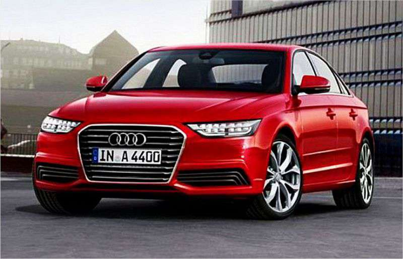
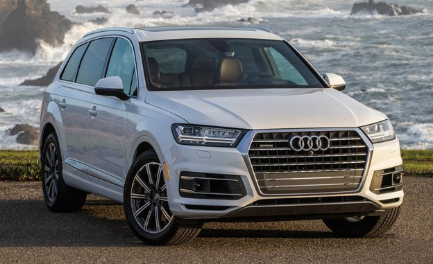

This is for the Audi enthusiast. Whether you prefer Sedans, Coupes, Convertibles, or SUVs this is the site for you to check out!
Here is one of my favorites: Audi A4.
This is one of the many cars that Audi makes that I like the most:
This website shows luxury cars, sports cars and more. What makes this a good site is that it is easy to navigate and it catches the user's attention. This site's navigation menu is on the side which is a little different. What I also like about this site is that it keeps the navigation menu on the side even when you click on the different links. This helps so the user won't have to scroll to the top for the menu.
| Sedans | Coupes | Convertibles | SUVs |
|---|---|---|---|
|  |  | ||
| Audi A4 | Audi TT | Audi R8 | Audi Q7 |
The cars listed above are just a few of Audi's beautiful, German-engineered vehicles.